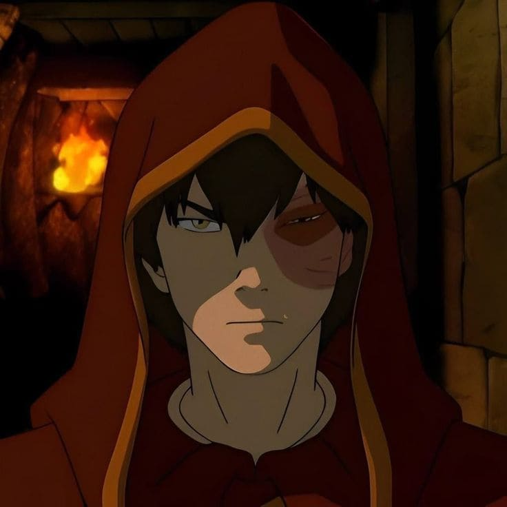
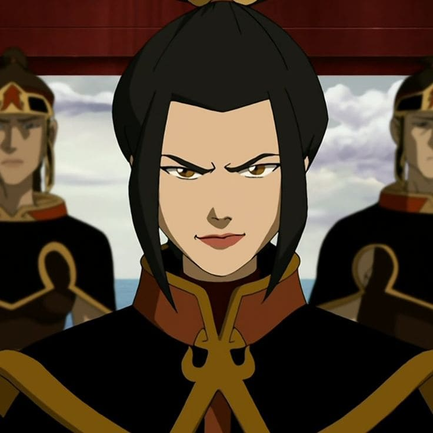
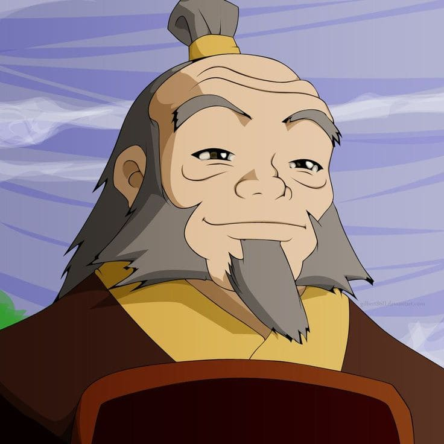

.png)
Isso revela uma energia forte, que quer mudar as coisas ao seu redor. Você não espera — você faz acontecer. Assim como a dobra de fogo, sua essência está na intensidade, na ambição e na capacidade de gerar impacto. Porém, essa mesma força pode te levar à impulsividade, então aprender a direcionar essa energia é o que te torna ainda mais poderoso(a).
Príncipe herdeiro da Nação do Fogo, exilado pelo próprio pai, o Senhor do Fogo Ozai, após falar fora de contexto em uma reunião de guerra e se recusar a lutar — foi punido com uma cicatriz no rosto e enviado em uma missão impossível: capturar o Avatar para recuperar sua "honra". Inicialmente, Zuko é um antagonista impulsivo, frustrado e consumido pela raiva. Sua dobra de fogo é poderosa, mas descontrolada, alimentada pela emoção negativa. Com o tempo, sob o aprendizado do tio Iroh, ele descobre que a fonte verdadeira da dobra de fogo não é a raiva, mas a energia vital e o equilíbrio interior. Ele abandona a Nação do Fogo, junta-se ao Grupo do Avatar e torna-se o mestre de dobra de fogo de Aang. No final, desafia Azula em um agni kai (duelo de fogo) durante o Cometa de Sozin, vence e se torna o Senhor do Fogo, trazendo paz ao mundo.


Azula Filha de Ozai e irmã mais nova de Zuko, é uma prodígio da dobra de fogo. Seu fogo tem cor azul — uma indicação de maior temperatura e controle avançado. Ela domina técnicas raras como a geração de raios (com perfeição) e a manipulação precisa de chamas em combate corpo a corpo. Diferente de Zuko, sua dobra não se baseia em raiva bruta, mas em controle frio, cálculo e perfeccionismo obsessivo. Psicologicamente instável devido à pressão do pai e falta de afeto genuíno, Azula é manipuladora, sádica e extremamente perigosa. Durante o Cometa de Sozin, seu estado mental se deteriora ao ver que sua amiga Ty Lee e sua irmã Mai a traíram (na verdade, ajudaram Zuko). Ela perde o controle emocional e, consequentemente, a capacidade de gerar raios com precisão — o que leva à sua derrota para Zuko e Katara. Seu destino final é um colapso mental e reclusão em instituições de tratamento..
Iroh General aposentado da Nação do Fogo, conhecido como "O Dragão do Oeste". Foi herói da guerra, mas após a morte traumática de seu filho Lu Ten (no cerco a Ba Sing Se), Iroh abandonou o combate ativo e tornou-se um sábio espiritual e paternal. Ele é o mestre de Zuko e uma figura de equilíbrio moral. Iroh criou a técnica de redirecionamento de raios — inspirada nos movimentos fluidos dos dobradores de água — e é um dos poucos humanos que conseguiu entrar e sair do Mundo Espiritual sem ser Avatar. Sua dobra de fogo é poderosa, mas ele raramente luta, preferindo chá, jogos de estratégia e ensinar lições de vida. Iroh também é um mestre da dobra de fogo baseada no dragão, tendo sido o último (antes de Zuko e Aang) a aprender com os mestres originais: os dragões Ran e Shaw. No final, torna-se Senhor do Fogo provisório antes de passar o trono para Zuko.
